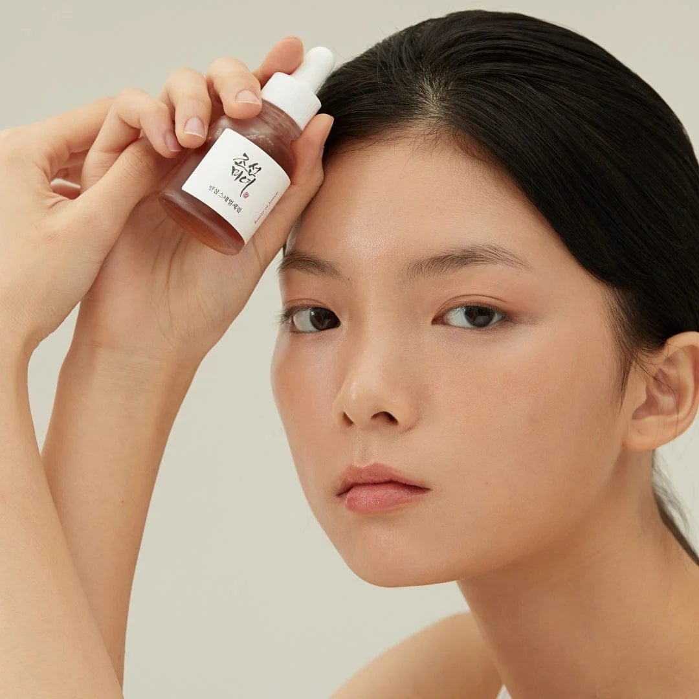
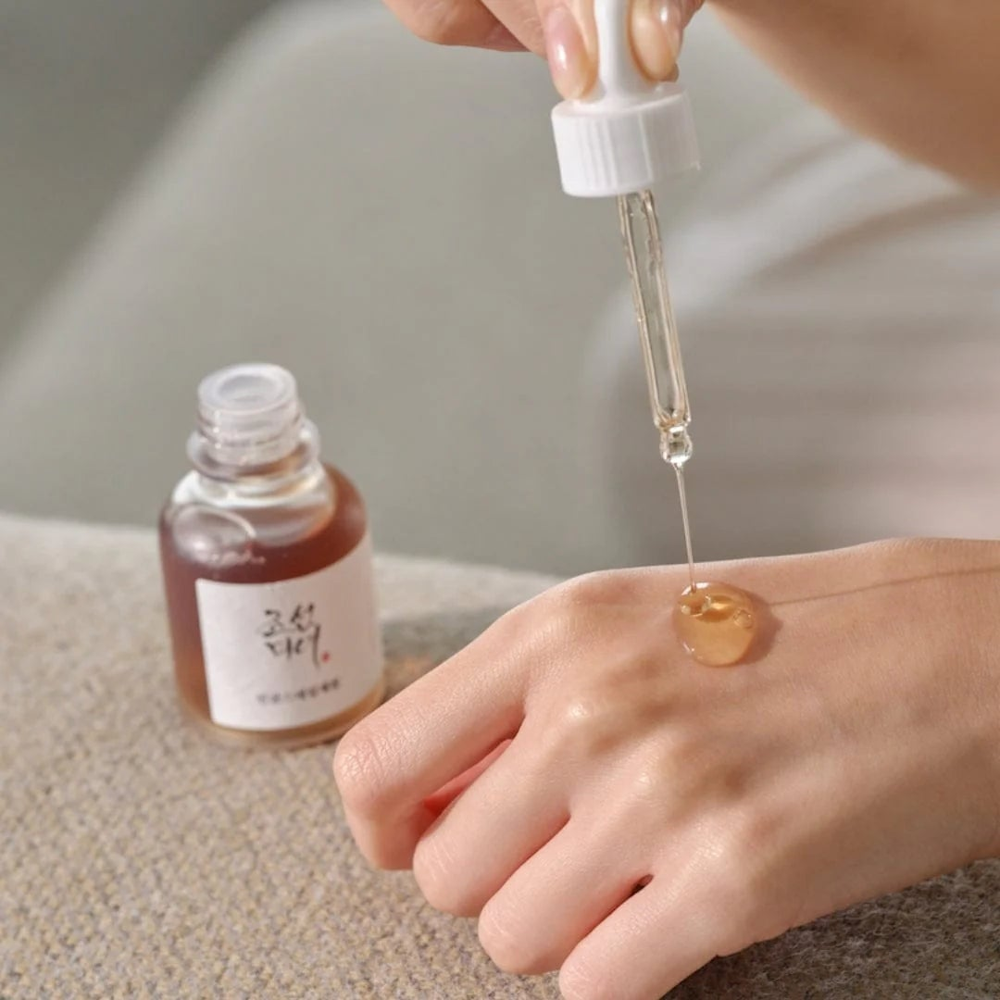
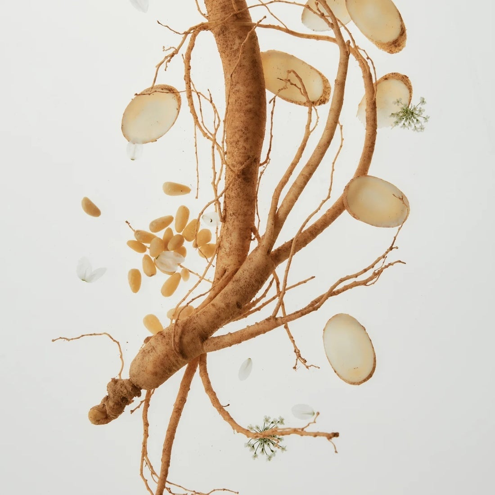
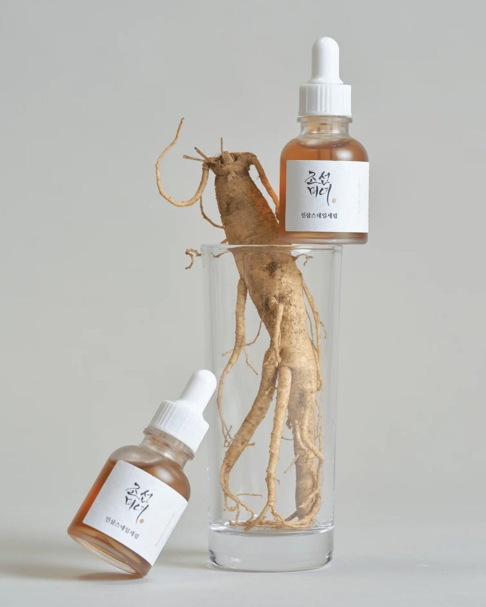
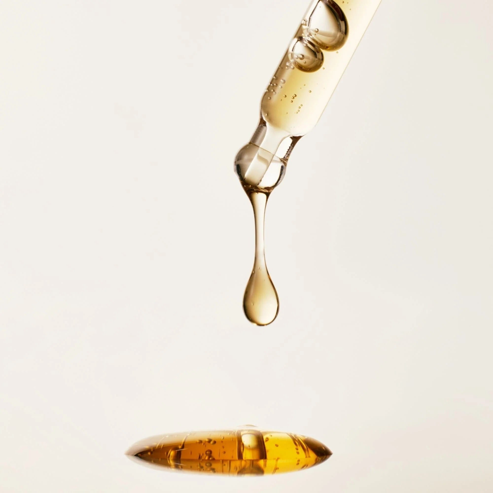
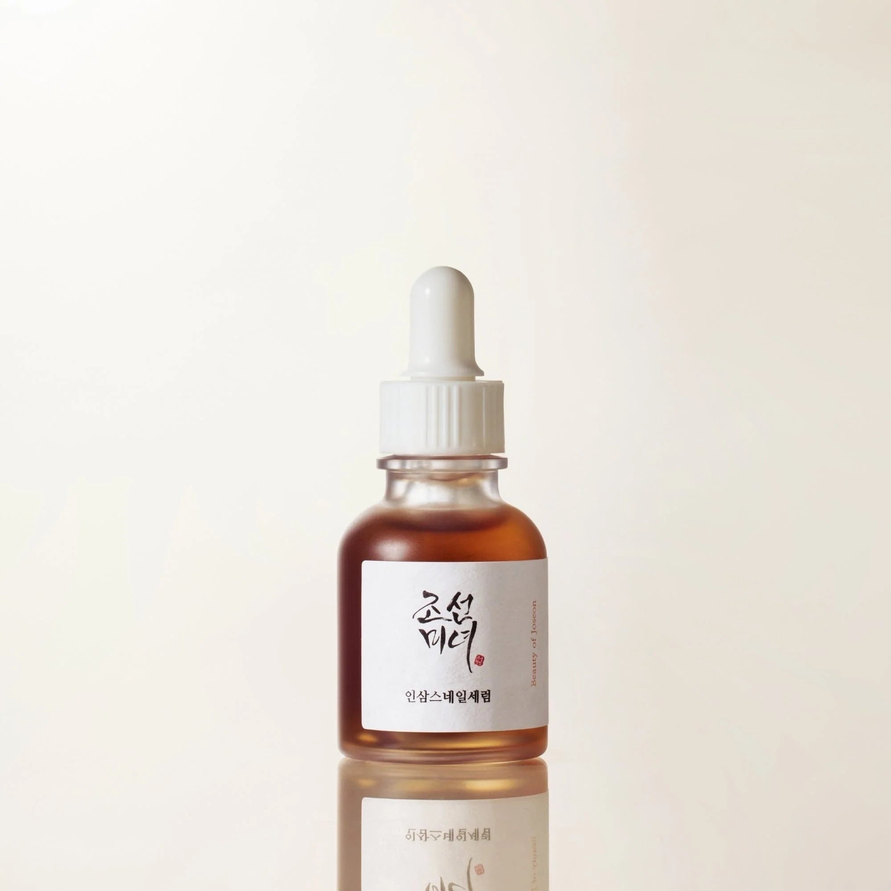

<div> <table style="border-collapse: collapse; width: 99.9809%;" border="1"><colgroup><col style="width: 49.9522%;"><col style="width: 49.9522%;"></colgroup> <tbody> <tr> <td> <div><span style="font-size: 14pt;"><strong>Beauty of Joseon Ser revigorant cu ginseng si mucina de melc</strong></span></div> <div><span style="font-size: 14pt;"><strong>30ml</strong></span></div> <div><span style="font-size: 14pt;">Serul Revive de la Beauty of Joseon completeaza perfect un ritual dedicat luminozitatii si prospetimii naturale. Flaconul minimalist este usor de integrat in rutina zilnica, fiind o alegere excelenta pentru obtinerea unui aspect uniform, calm si profund ingrijit in fiecare zi.</span></div> </td> <td></td> </tr> <tr> <td></td> <td><span style="font-size: 14pt;">Experimenteaza o aplicare fina si precisa cu ajutorul pipetei practice, ce permite dozarea ideala direct pe piele. Textura fluida a serului Revive se distribuie delicat, oferind o senzatie imediata de confort, hidratare profunda si o ingrijire optima adaptata rutinei tale zilnice de infrumusetare.</span></td> </tr> <tr> <td><span style="font-size: 14pt;">Radacina de ginseng, ingredientul de baza recunoscut in ritualurile traditionale coreene de ingrijire, reflecta puritatea si provenienta ingredientelor naturale folosite pentru a asigura o formula bogata, dedicata revitalizarii si hranirii texturii pielii tale.</span></td> <td></td> </tr> <tr> <td></td> <td><span style="font-size: 14pt;">Flacoanele elegante ale serului Revive, alaturi de o radacina autentica de ginseng intr-un pahar transparent. Designul curat subliniaza armonia dintre traditia plantelor hanbang si cosmetica moderna, oferind o experienta vizuala premium si profesionala.</span></td> </tr> <tr> <td><span style="font-size: 14pt;">Textura matasoasa si densitatea fluida a serului sunt surprinse perfect in aceasta picatura concentrata. Formula sa delicata promite o absorbtie excelenta, infuzand pielea cu o hidratare intensa, fara a lasa o senzatie grasa, lasand tenul neted, catifelat si vizibil revigorat.</span></td> <td></td> </tr> <tr> <td></td> <td><span style="font-size: 14pt;">Prezentarea clasica a serului Revive intr-un flacon elegant din sticla mata, cu o reflexie curata pe suprafata lucioasa. Ambalajul simplu, dotat cu o pipeta alba igienica, reflecta calitatea si atentia brandului fata de detaliile unui produs esential pentru hidratarea tenului.</span></td> </tr> </tbody> </table> </div>